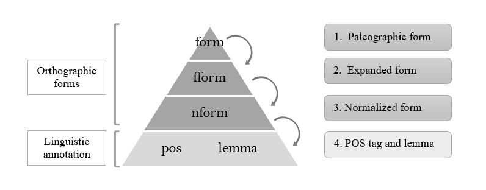
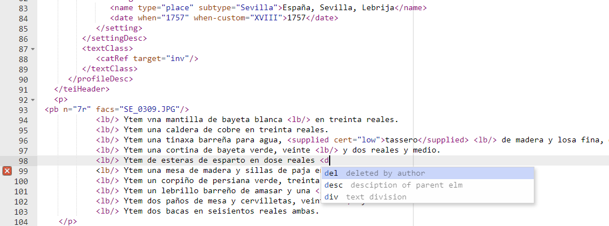
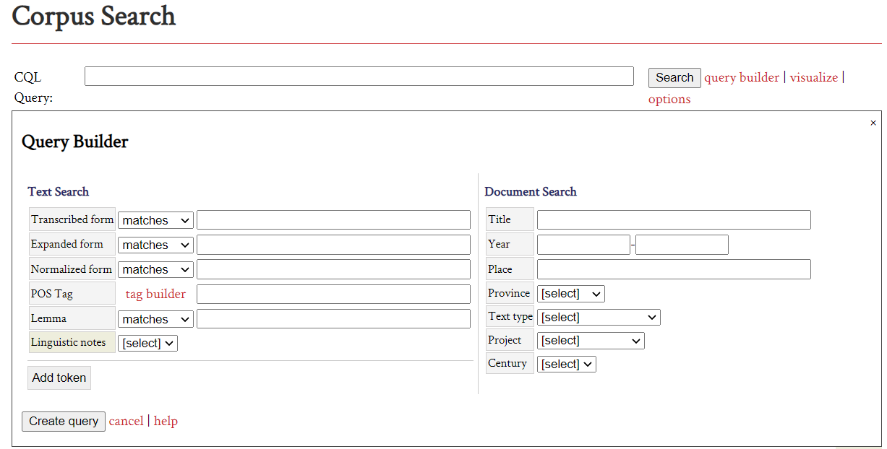
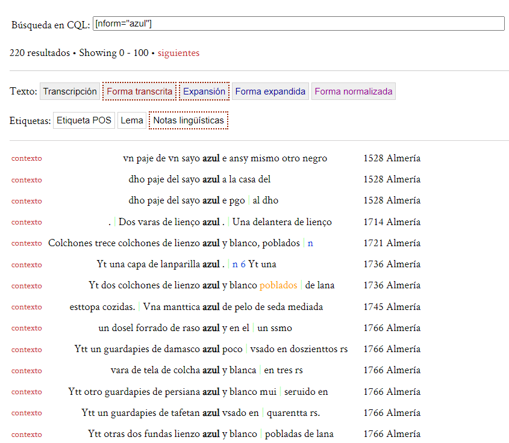
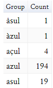
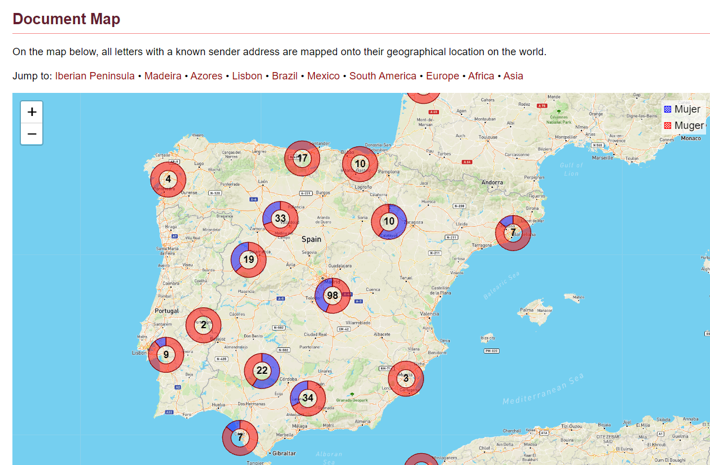
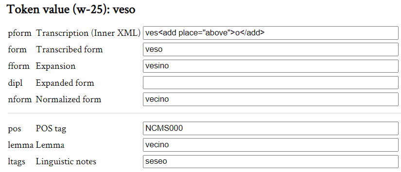
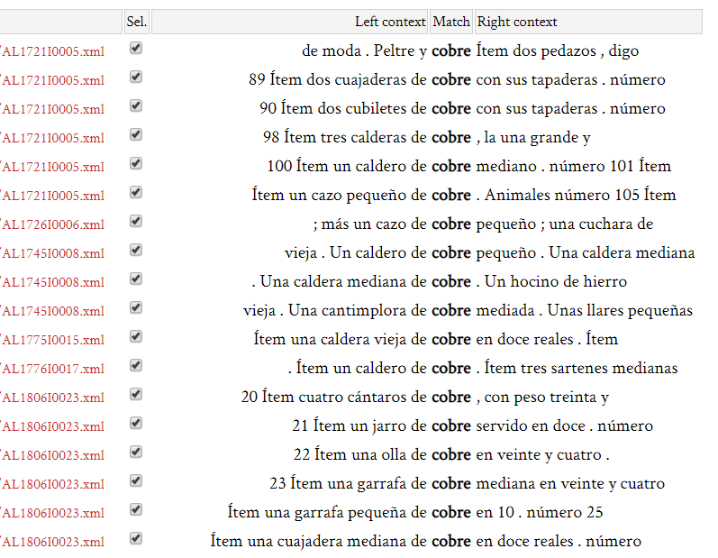

TEITOK, a visual solution for XML/TEI encoding: editing, annotating and hosting linguistic corpora
Table of Contents
Abstract
TEITOK is a web-based system designed to bring scholarly editing and computational linguistics together with the purpose of creating and hosting online language corpora. The system offers a visually attractive environment for digital editing based on the XML/TEI standard. TEITOK consists of automatic processes for carrying out many linguistic text processing tasks and functions. It boasts an intuitive interface via which researchers and corpus creators, who are not always computer literate, can manage corpus maintenance and error correction. The tokenization strategy in TEITOK permits the linking of the different levels of editing and annotation of each word in a single XML document for subsequent retrieval of information. This method provides a tool for editing, annotating, and exploiting corpora with a powerful search engine. TEITOK stands out for its high customisation and adaptability to a wide variety of corpora. In this article we analyse its utilities oriented mainly towards the creation of historical corpora, taking for this purpose the particular case of Oralia diacrónica del español (ODE).
Introduction
A traditional form of digital editing of manuscripts focuses exclusively on the representation of the textual content1. Editions of this type are based on the transcription of the text itself and leave information related to paratextual elements aside, such as those linked to the writing process or the presentation of the text (crossings out, omissions and additions by the scribe, changes of hand, handwriting styles, rubrics, decorative elements, etc.), but also those related to the state of conservation of the original manuscript (deterioration of the support, stains, tears, etc.). The creation of linguistic historical corpora has traditionally been carried out on the basis of transcriptions lacking the representation of features such as those mentioned above, and with a focus on linguistic information. There are two main reasons for this. Firstly, the transcription of original sources is a complex and time-consuming task that requires paleographical skills, and, in addition, there is the problem of how to represent the non-textual elements that are part of the reality of the document. Secondly, there is a lack of tools that support the visualisation and publication of digital editions (Janssen 2016, 4037), making it difficult for philologists to manage their own corpora. This has all been manifested in the preference for linguistic corpora based on plain text to overcome aspects such as, on the one hand, the difficulty of combining the textual and extra-textual elements of the original source in the edition and, on the other hand, the often insufficient training in programming and computer languages on the part of philologists, which requires the use of tools focused on the publication of digital edition projects.
One solution to the first of the obstacles mentioned above, namely the combination of textual and extra-textual elements, has been the encoding of texts in the XML/TEI format. TEI provides a standard for encoding everything purely related to linguistic information, including tokenization, but also to structure, formatting, metadata, as well as extra-textual issues, such as modifications during the writing process or the state of preservation. These aspects, especially in the case of manuscripts, can affect the linguistic interpretation of the text and are as relevant as the text itself. In short, TEI proposes a standard for digital scholarly editions of texts. However, applying such a markup language requires an appropriate publishing solution.
The TEITOK system (Janssen 2016) solves the second problem, which is the existing gap in the digital publication of historical corpora and stands out as a particularly useful tool for outputting the visualisation and annotation of digital editions that conform to the TEI standard. In addition, TEITOK provides computational resources for the linguistic processing of text and the creation of annotated corpora. This review examines the TEITOK system as an online tool for the editing, annotation, and exploitation of historical corpora, specifically from the perspective of the researcher2.
Design
TEITOK is a web-based system for viewing digital editions, annotating linguistic corpora and retrieving data, all in a single environment. It was developed by Maarten Janssen and is an Open Source tool that can be installed on Linux and MacOS by downloading it directly from the repository on GitLab3. The tool is freely available, ready for production. TEITOK was initially developed at the Centro de Linguística da Universidade de Lisboa (CLUL) and later at CELGA-ILTEC. TEITOK is currently maintained at the Institute of Formal and Applied Linguistics (ÚFAL) of Charles University, Prague4.

TEITOK uses XML/TEI files as input to create an annotated linguistic corpus. However, it partially deviates from the TEI standard to make the set of files a searchable corpus8. The main difference lies in the tokenization of the texts. While TEI uses <w> and <pc> elements to differentiate words from punctuation marks, TEITOK uses a single element, <tok>, for all graphical forms of text. Tokenization in TEITOK is fully automatic: it adds the <tok> tags inline to the XML document and prepares the text for subsequent processing. The linguistic information of each word in TEITOK is added as attributes of this new <tok> element, which will include as many attributes as types of annotation the user wishes to offer for the same word. From this point on, the XML document is no longer valid TEI. Currently there is no ODD schema available for the TEITOK tool, but it can be found for specific projects using TEITOK such as Post Scriptum9.
For example, for the form "ziud" found in an ODE manuscript (see Code 1), the attribute @form includes the paleographic transcription; @fform adds the expansion of the abbreviation; @nform collects the modernised form of the word, and @pos and @lemma include the linguistic information referring to the POS tag and the lemma of the word ciudad (see code example 1).
@form), the rest of the different forms mentioned above will assume this form if no other is found. Likewise, for the linguistic annotation (POS and lemma), TEITOK takes the standard form (@nform). This inheritance hierarchy (see Fig. 2) allows the web interface to switch from one text edition to another without the need to replicate information. If this were not the case, it would be difficult to resolve annotation errors (Janssen 2016, 4038).
The inheritance system allows the combination of different versions of each text into a single file, and different types of linguistic information into a single token. The fact that all the data is contained in the same XML document facilitates the management and processing of files and solves the problem of the different versions in historical corpora that are not usually linked to one another (Calderón Campos 2019). In some of the historical corpora, offering two or more versions of a text translates into the overwhelming task of managing different corpora.
TEITOK provides an HTML form where the metadata can be filled in without accessing the XML file thanks to XPath instructions. The same system also permits the configuration of those elements of the TeiHeader that are relevant in each corpus, in order to display the metadata alongside each document in the interface.

Thanks to the addition of the editing module, TEITOK can now handle the entire process of corpus elaboration, from transcription to linguistic annotation and search. As an alternative, XML files can also be imported into the platform from the users’ computer.
Automatic processing
TEITOK incorporates automatic services for the complete linguistic processing of texts: tokenization, standardisation and annotation of the corpus. It also includes support for the linguistic annotation of texts with the NeoTag tagger (Janssen 2012), written in Perl. The tagger uses the Viterbi algorithm to automatically assign a POS tag and a lemma to each token in the corpus on the basis of probability. The program has universal grammar statistics and applies n-grams based on word endings.
NeoTag works by using input data taken from parameters created from a previously annotated corpus. These parameters can either be imported or built up from the corpus itself when it reaches a considerable size, as NeoTag uses the corpus for training. The new parameters are constantly updated as the corpus grows in size, meaning the quality of the automatic annotation improves as the volume of annotated texts increases (Janssen 2016, 4039).
NeoTag assigns a POS tag based on a tagset and uses different rules based on linguistic analysis patterns to recognise the presence of derivational morphemes, enclitic particles, or numeric characters. It also enables the annotation of a word that is totally new in the corpus, as well as the possibility of applying probabilistic models to tag grammatical neologisms (Janssen 2012). For lemmatization, NeoTag applies textual segmentation rules to extract the lemma from the normalised form of the word. To modify the input form, the system generates a morphological parsing rule based on the final character of the word (Janssen 2012, 2).
There is no internal method in TEITOK to test the accuracy of the tagger. In historical corpora, the hit rate is lower than in modern text annotation and depends, above all, on the training corpus used10. In the particular case of ODE it has not yet been possible to estimate the accuracy of automatic annotation with statistical precision. In the initial stages, this task has required extensive manual review. Errors have decreased after the annotation of approximately 100,000 words, when NeoTag has been trained on the corpus data itself.
Search options

 

Corpus management


Error correction is, therefore, a task for researchers, who can manage their own corpora autonomously without external technical assistance. This means a quick and intuitive way of correcting errors detected by automatic annotation without the need to access the XML code and modify the information from the document source file.
Other functions related to corpus management are explained on the tool's website11. TEITOK has a site with a detailed description of what it is and how it works, a list of projects using the tool, publications about its development, etc. The help section, which includes a reference guide with explanations about the installation or how to customise the appearance of the website, is particularly useful. It also includes a General FAQ section and other instructions, although not all of them are equally accurate.
Direct contact with the developer is possible through the contact details on his personal web page12, but the site lacks a helpdesk specifically dedicated to solving problems for TEITOK users. For community support and recent developments, there is also a Google group mailing list and a Facebook page.
Conclusions
In this article we review the advantages offered by TEITOK for the creation of linguistic corpora and, more specifically, of historical corpora whose primary sources are manuscripts. TEITOK adapts to the requirements and objectives of different types of corpora, as it incorporates numerous modules that can be customised, both in terms of functions and of the web interface style of each project. This means that TEITOK allows each project or corpus to adapt the design to its own look and requirements, setting up the navigation menu or modifying the text visualization with CSS.
TEITOK is based on XML/TEI encoded files in order to offer corpus visualisation and exploitation on a single platform. This XML/TEI markup language enables different versions of the text to be combined in the same file. The linguistic annotation of each word is added as attributes of the <tok> element. Text indexing allows the subsequent retrieval of data through advanced searches using CQP directly on the website.
The main difficulties in using TEITOK for researchers with a humanistic background lie in the initial phases of installation and customisation of the functions adapted to the objectives and interface of the project. Once this phase is complete, the creation of corpora on the website only requires knowledge of XML/TEI for text transcription and editing, but not of programming to carry out the rest of the tasks. This means that researchers can manage the corpus and its maintenance without requiring any other technical or computer skills. Thus, TEITOK becomes a tool that allows the combination of digital editing with the advanced features of a linguistic corpus, giving the researcher the necessary autonomy to manage the complete processing of the corpus online and to correct errors as soon as they are detected.
Bibliography
- Calderón Campos, M. 2019. “La edición de corpus históricos en la plataforma TEITOK. El caso de Oralia diacrónica del español”. Chimera, 6, 21-36.
- Claridge, C. 2008. “Historical corpora”. In Corpus linguistics: an international handbook (Vol. 1) edited by A. Lüdeling and M. Kytö, 242-259. Berlin / New York: Walter de Gruyter.
- Janssen, M., Ausensi, J. y Fontana, J. M. 2017. “Improving POS tagging in Old Spanish using TEITOK”. In Proceedings of the NoDaLiDa 2017 workshop on Processing Historical Language, Gotemburg, 2-6.
- Janssen, Maarten. 2016. “TEITOK: Text-Faithful Annotated Corpora”. In Proceedings of the Language Resources and Evaluation Conference (LREC 2016). Portoroz: ELRA, 4037-4043.
- Janssen, Maarten. 2012. “NeoTag: a POS tagger for grammatical neologism detection”. In Proceedings of the 8th International Conference on Language Resources and Evaluation (LREC 2012). Estambul: ELRA, 2118-2124.
- Kytö, M. 2011. “Corpora and historical linguistics”. Revista Brasileira de Linguística Aplicada, Belo Horizonte, 11, vol. 2, 417-457.
- Vaamonde, Gael. 2018. “La multidisciplinariedad en la creación de corpus históricos: El caso de Post Scriptum”. In Humanidades digitales: sociedades, políticas, saberes. Artnodes, 22, 118-127.
Notes
- Vaamonde (2018), Kytö (2011), Claridge (2008) have insisted on this idea. ↑
- My academic background is mainly linguistic. In recent years I have worked on several projects within the framework of the Digital Humanities and digital publishing in which I have been part of the process of creating the Oralia diacrónica del español (ODE) corpus, from the first stages of transcription in XML/TEI to its linguistic annotation, always in the TEITOK web environment. ↑
- https://gitlab.com/maartenes/TEITOK. Accessed: September 27, 2021. ↑
- https://web.archive.org/web/20221110115135/https://ufal.mff.cuni.cz/. ↑
- https://web.archive.org/web/20221110115205/https://fale.ufal.br/projeto/nurcdigital/. ↑
- https://web.archive.org/web/20220308213603/http://teitok.clul.ul.pt/postscriptum/es/index.php. ↑
- https://web.archive.org/web/20221110115325/http://corpora.ugr.es/ode/. ↑
- TEITOK includes a script that facilitates the conversion of XML files to the valid TEI standard. ↑
- The schema can be found here: http://teitok.clul.ul.pt/postscriptum/files/ps_doc.html. Accessed: October 17, 2021. Other differences between TEI/XML and TEITOK are explained here: http://www.teitok.org/index.php?action=help&id=teixml. Accessed: October 17, 2021. ↑
- The accuracy of NeoTag has been tested on corpora of current Spanish with a 97% accuracy rate for morphosyntactic annotation and 95% for lemmatization (Janssen 2012). ↑
- https://www.teitok.org/. Accessed: September 27, 2021. ↑
- https://web.archive.org/web/20221110120113/http://maarten.janssenweb.net/. ↑
@article{teitok,
author = {Arrabal Rodríguez, Pilar},
title = {TEITOK, a visual solution for XML/TEI encoding: editing, annotating and hosting linguistic corpora},
journal = {RIDE – A review journal for digital editions and resources},
number = {15},
year = {2022},
doi = {10.18716/ride.a.15.5},
url = {https://doi.org/10.18716/ride.a.15.5},
}TY - JOUR
AU - Arrabal Rodríguez, Pilar
TI - TEITOK, a visual solution for XML/TEI encoding: editing, annotating and hosting linguistic corpora
T2 - RIDE – A review journal for digital editions and resources
IS - 15
PY - 2022
DA - 2022/12
DO - 10.18716/ride.a.15.5
UR - https://doi.org/10.18716/ride.a.15.5
PB - Institut für Dokumentologie und Editorik e.V.
LA - en
ER - Arrabal Rodríguez, P. (2022). TEITOK, a visual solution for XML/TEI encoding: editing, annotating and hosting linguistic corpora. RIDE – A review journal for digital editions and resources, (15). https://doi.org/10.18716/ride.a.15.5Arrabal Rodríguez, Pilar. "TEITOK, a visual solution for XML/TEI encoding: editing, annotating and hosting linguistic corpora." RIDE – A review journal for digital editions and resources, no. 15, 2022. https://doi.org/10.18716/ride.a.15.5.Arrabal Rodríguez, Pilar. "TEITOK, a visual solution for XML/TEI encoding: editing, annotating and hosting linguistic corpora." RIDE – A review journal for digital editions and resources, no. 15 (2022). https://doi.org/10.18716/ride.a.15.5.